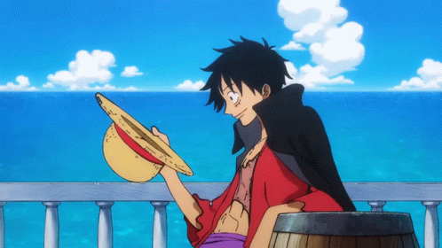

HOBBIES
Disfruto ver el cielo, películas y series, de estas últimas, especialmente el ánime. Siento una admiración por las producciones japonesas y lo que pueden llegar a transmitir. Escucho música la mayor parte del tiempo, es una actividad indispensable para mi día a día.
SERIE FAVORITA
ONE PIECE

La serie narra la historia de un joven llamado Monkey D. Luffy, que inspirado por su amigo pirata Shanks, comienza un viaje para alcanzar su sueño, ser el Rey de los piratas, para lo cual deberá encontrar el tesoro One Piece dejado por el anterior rey de los piratas Gol D. Roger.